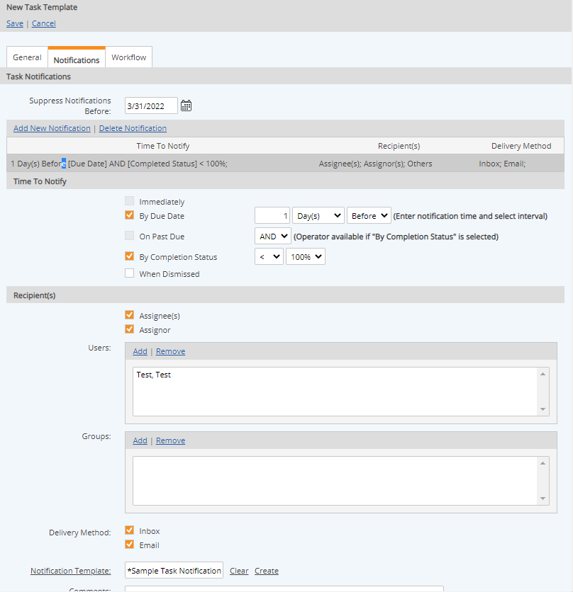
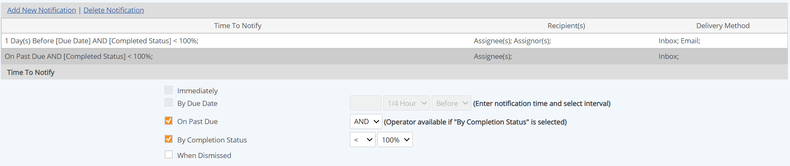

Task notifications can be set up to email task assignments or reminders or to notify any interested parties when the task status changes. Notifications may be sent to the assignee(s), assignor, or other users or groups not directly associated with the task (such as a supervisor or department head).
Task Notifications may be defined individually for a task on the task properties, or defined on a Task Template which is applied to multiple tasks. See Task Templates for more information. The Notification fields are the same in both cases.
Suppress Notifications Before Date: You have the option to suppress task notifications before a specified date. This is useful during the configuration process to prevent notifications from going out until the "go live" date. You can specify the date on the top of the Task Template Notifications tab.
When task notifications are applied to a task from a Task Template, the notifications will not be editable from the task properties.
To set up task notifications:
Select Add New Notification.
Specify the Time to Notify by selecting the appropriate checkbox and adding additional qualifiers as desired.
Immediately: Sends notification as soon as the task is saved.
By Due Date: Sends notification on the due date plus or minus the specified time period.
On Past Due: Sends notification when task is overdue AND/OR completion status is as specified. (Field must be combined with completion status and is not available unless By Completion Status is checked.)
By Completion Status: Sends notification based on task completion status.
When Dismissed: Sends notification when a task is dismissed. (A task is dismissed when for some reason it cannot be completed.)
Notify assignee 1 day before due date if task is not complete:

Select Recipient(s) for the notification.
To send to Assignee or Assignor, select the checkboxes.
To send to users other than Assignee/Assignor, click Add and select the user(s) or group to notify from the selection window.
Immediate notifications to Assignee or Assignor are not saved. The purpose of this type of notification is only to inform the assignee or assignor that a new task was created, or an existing task was edited.
Select the Delivery Method by checking the appropriate checkbox (you may select both).
Inbox sends a message to the recipient’s Inbox.
Email sends an email to the recipient’s email address (from the user profile).
To assign a notification template with custom message contents, click Notification Template or click Create to create a new Notification Template.
Enter any desired comments.
If the task notification setup is incomplete, error messages will be displayed on the task setup page. Complete the information or correct any errors before continuing.
To add another notification, select Add New Notification.
